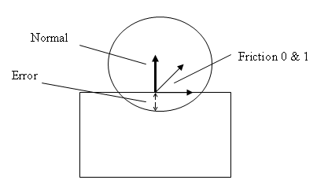

Contact modification is accomplished by
providing a callback class which receives notifications when contacts
are available to be modified.
class NxUserContactModify
{
virtual bool onContactConstraint(
NxU32& changeFlags,
const NxShape* shape0,
const NxShape* shape1,
const NxU32 featureIndex0,
const NxU32 featureIndex1,
NxContactCallbackData& data) = 0;
};
There are a couple of special requirements for onContactConstraint()
due to the callback coming from deep inside the SDK. In particular, the
callback should be thread safe and reentrant. In other words, the SDK
may call onContactConstraint() from any thread and it may be called
concurrently (i.e., asked to process 2 or more constraints
simultaneously).
The contact modification callback class can be set using the
userContactModify member of NxSceneDesc or the setUserContactModify()
methods of NxScene.
NxUserContactModify* NxSceneDesc::userContactModify;
virtual void NxScene::setUserContactModify(NxUserContactModify* callback) = 0;
virtual NxUserContactModify* NxScene::getUserContactModify() const = 0;
Below is a list of the onContactConstraint() parameters:
- changeFlags - Set the change flags based upon which
members of NxContactData
have been changed. Modifying the members of NxContactData without
setting
the appropriate flags can cause unexpected results. Bit wise OR
together
members of NxContactConstraintChange to signify the set of changes.
- shape0 - First shape
involved in the contact.
- shape1 - Other shape
involved in the contact.
- featureIndex0 - Feature
index associated with shape0. Feature indices are only defined for
triangle mesh and heightfield shapes. A feature index for a triangle
mesh shape is the pre cooked triangle index. For a heightfield shape,
a
feature index is a triangle index as specified on creation, including
holes in the index.
- featureIndex1 - Feature
index associated with shape1.
- data - Contact data (see
NxContactCallbackData for more information).
Contact Data:
- minImpulse - Minimum impulse value that the solver can apply. Normally this should be 0, negative amount gives sticky contacts.
- maxImpulse - Maximum impulse value that the solver can apply. Normally this is FLT_MAX. If you set this to 0 (and the min impulse value is 0) then you will void contact effects of the constraint.
- error - Error vector. This is the current error that the solver should try to relax.
- target - Target velocity. This is the relative target velocity of the two bodies.
- localpos0 - Constraint attachment point for shape 0. If the shape belongs to a dynamic actor, then localpos0 is relative to the body frame of the actor. Alternatively it is relative to the world frame for a static actor.
- localpos1 - Constraint attachment point for shape 1.
- localorientation0 - Constraint orientation quaternion for shape 0 relative to shape 0s body frame for dynamic actors and relative to the world frame for static actors. The constraint axis (normal) is along the x-axis of the quaternion. The Y axis is the primary friction axis and the Z axis the secondary friction axis.
- localorientation1 - Constraint orientation quaternion for shape 1.
- staticFriction0 - Static friction parameter 0. (Note: 0 does not have anything to do with shape 0/1, but is related to anisotropic friction, 0 is the primary friction axis).
- staticFriction1 - Static friction parameter 1.
- dynamicFriction0 - Dynamic friction parameter 0.
- dynamicFriction1 - Dynamic friction parameter 1.
- restitution - Restitution value.

Contact modification can be enabled on a per actor basis using the
NX_AF_CONTACT_MODIFICATION actor flag. This tells the SDK to call the
contact modification callback for each contact between the actor and
any other actor.
NxActorDesc::flags
Alternatively, the NX_NOTIFY_CONTACT_MODIFICATION flag can be set for a
pair of actors, causing the contact modification callback to be active
only for a specific pair.
virtual void setActorPairFlags(NxActor& actorA, NxActor& actorB, NxU32 nxContactPairFlag) = 0;